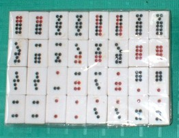
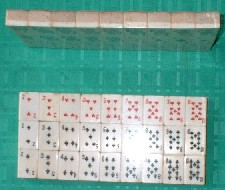

これは別に珍奇牌ではない。現在でも中国で遊ばれている天九牌（てんきゅうハイ）というもの。欧米のドミノのルーツでもある。全部で32枚あり、文子（ウェンツ）22枚と武子（ウーツ）10枚の２種で構成されている。

遊び方はいろいろあるが、代表的なものは牌九（パイチョー）というゲーム法。といっても牌九というゲーム自身にも多くのヴァリエーションが存在する。その中でも代表的なゲーム法は、
１）プレーヤー４人。
２）まず32枚で２段１列を作り、これを左右に分ける。
３）分けたうち左側の16枚を１ゲームめ用の配牌、右側を２ゲームめ用の配牌とする。
４）１ゲームは２回の勝負で成り立っている。
５）子は配牌を受け取る前に、１勝負め分幾ら、２勝負め分幾ら、と賭け金を張る。賭け金は必ず１勝負めより、２勝負めを多く張る。ただし１勝負めの額と２勝負めの額の差があまり大きくならないように、その差や賭け金の上限をきめておく。
６）１ゲームめ用の16枚を４枚づつ、子供３人に分配する。残った４枚を親が取る。
７）２枚でいろいろな組み合わせがある（日本のおいちょカブで云うシッピンとかクッピン、あるいはアラシなど）。その組み合わせに該当しない場合は、数字の９に近いほうが上）。
８）各プレーヤーは、配牌で適当な組み合わせを２種つくる。
９）組み合わせのうち、１種類を一斉に出す。もっとも強い組み合わせを出した者が、１勝負めの賭け金を得る。
10）続いて２勝負めを同様に行う。
＃１勝負めで強い組み合わせを出してしまうと、２勝負めで負ける。
11）１ゲームが終わったら残りの16枚で２ゲームめをおこなう。１ゲームめで使用した牌は判っているので、２ゲームめは読みが重要となる。
大変おもしろいゲームで、やりだしたら必ずハマる。くれぐれも手を出さないように。(^-^；
といっても、ただ天九牌を紹介するだけがこのコラムの目的ではない。見た通り、天九牌の図柄は麻雀の筒子と非常によく似ている。それも道理、麻雀の筒子はこの天九牌の図柄が元になっている。
紙札ゲームである馬吊、また麻雀が紙札ゲームであった頃、筒子の図柄は貨幣そうろうであった（むかしの六文銭みたいな図柄）。↓
その紙札ゲームの麻雀が19世紀中葉、骨牌ゲームと融合して骨牌式の麻雀が誕生した。その融合の過程で、麻雀の貨幣の図柄は骨牌ゲームのサイコロめの図柄にとって替わられた。
天九牌の図柄は、もともとサイコロめを表している。つまりサイコロを３次元式数字シングル表示とするなら、天九牌はすべて２次元式数字ダブル表示である。
そして麻雀の筒子は、


 は２次元式数字シングル表示、
は２次元式数字シングル表示、

 は２次元式数字ダブル表示、
は２次元式数字ダブル表示、 は２次元式数字トリプル表示(3*3)である。
は２次元式数字トリプル表示(3*3)である。
表示方法こそ少し異なるが、天九牌は麻雀の筒子図柄が骨牌ゲームのサイコロ目に由来するという証拠の品なのだ。
おまけ
紙札麻雀が骨牌ゲームと融合して麻雀が誕生したなら、トランプだって骨牌と融合してもおかしくない。ということで誕生したのが骨牌トランプ。↓

あと100年も経ったら歴史家が、「むかし、トランプは紙札だった」なんて云ってるかも知れない。（笑）